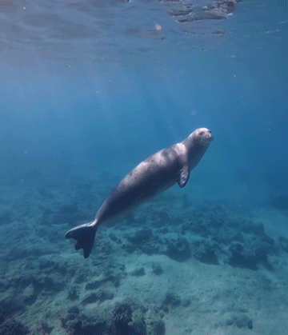
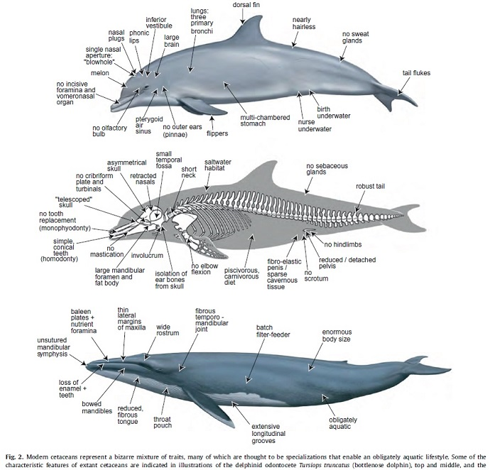
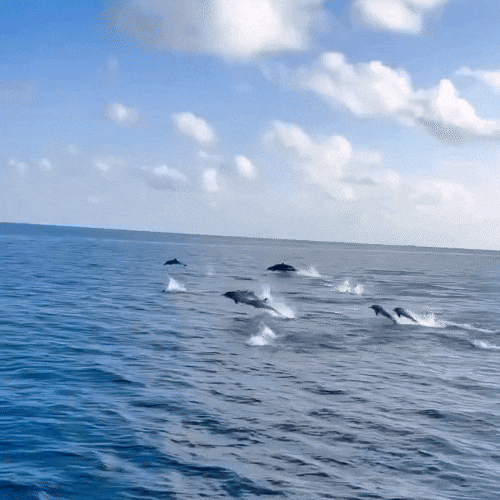

🠔 peixes 𓆝 ----𓆞---- 𓆟 crustaceos ➔


Mamíferos marinhos são animais mamíferos que dependem do ambiente marinho para sobreviver. Assim como os mamíferos terrestres, eles respiram por meio de pulmões, possuem sangue quente, amamentam seus filhotes e apresentam pelos em alguma fase da vida.
Entre os principais grupos estão os cetáceos, como baleias e golfinhos; os pinípedes, como focas e leões-marinhos; e os sirênios, como peixes-boi e dugongos.
Esses animais desenvolveram diversas adaptações que permitem sua sobrevivência nos oceanos. Dependendo da espécie, podem viver próximos ao litoral ou em regiões oceânicas profundas e desempenham importantes funções nos ecossistemas marinhos.

Os mamíferos marinhos possuem diversas características que os tornam adaptados à vida aquática. Essas adaptações permitem que eles respirem, se movimentem, encontrem alimento e sobrevivam em diferentes ambientes aquáticos.

Entre as principais características estão:
Entre os mamíferos marinhos mais conhecidos estão:
Cada grupo possui características específicas e desempenha papéis importantes nos ecossistemas marinhos.
